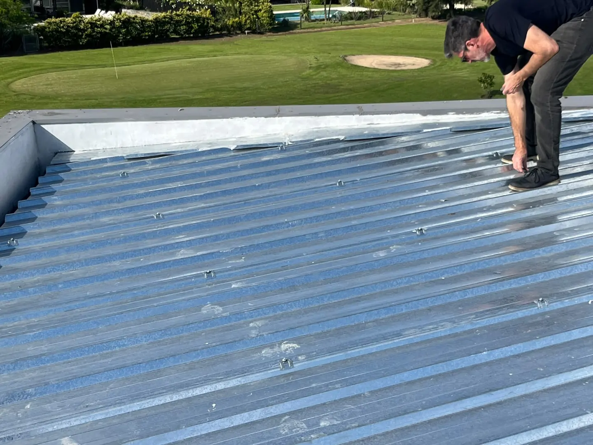
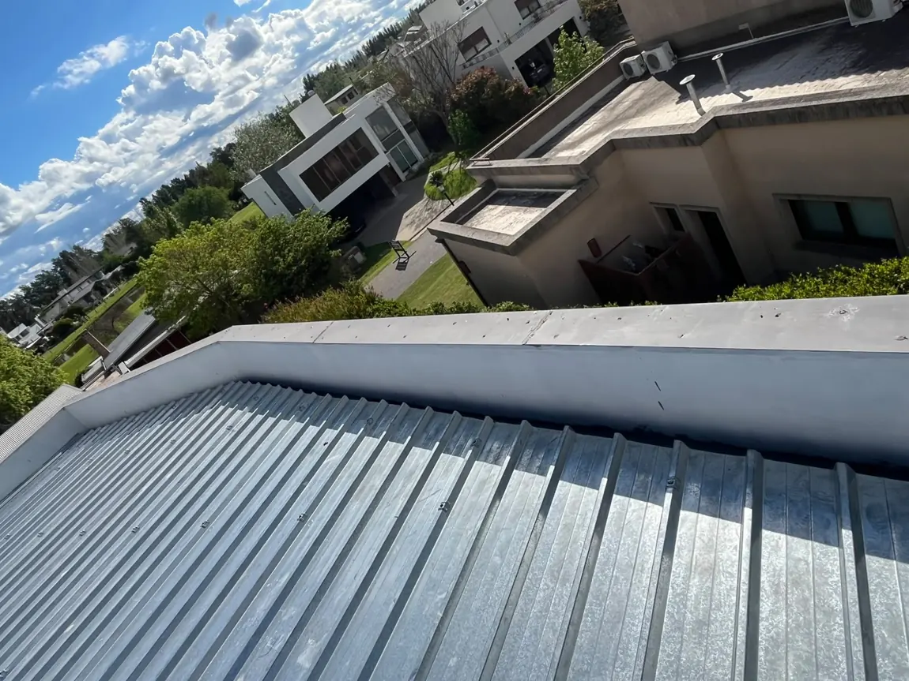
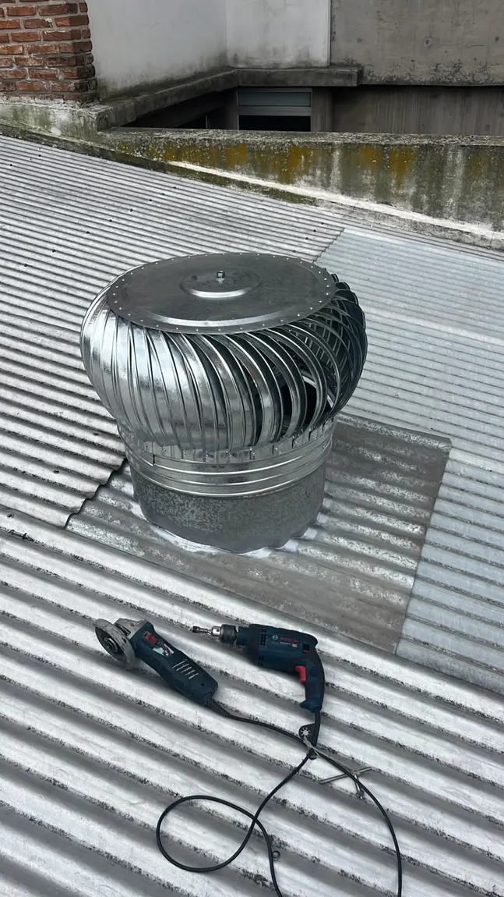
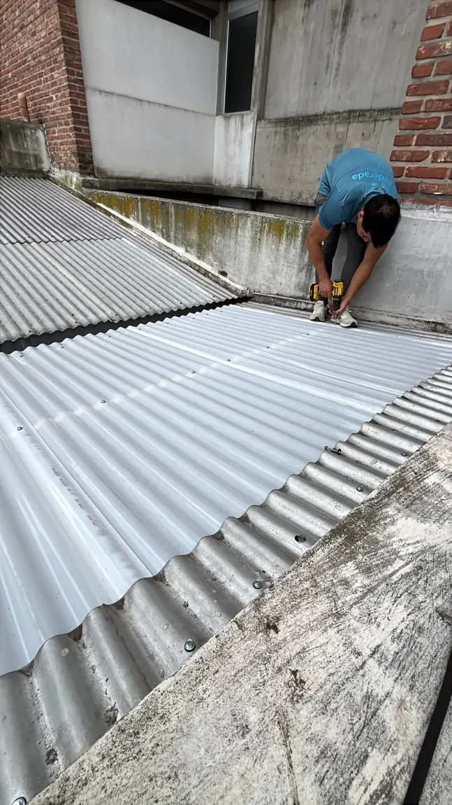
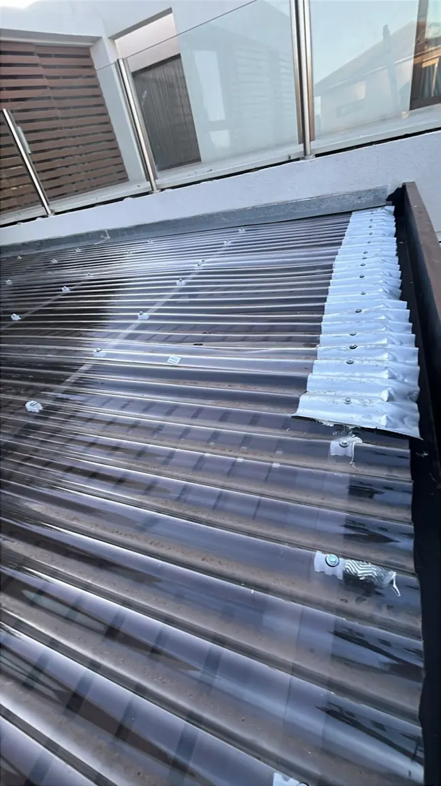
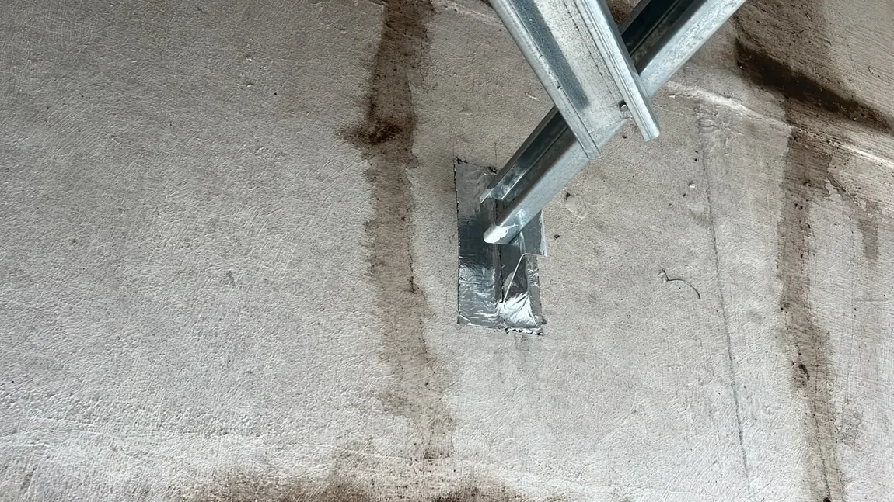
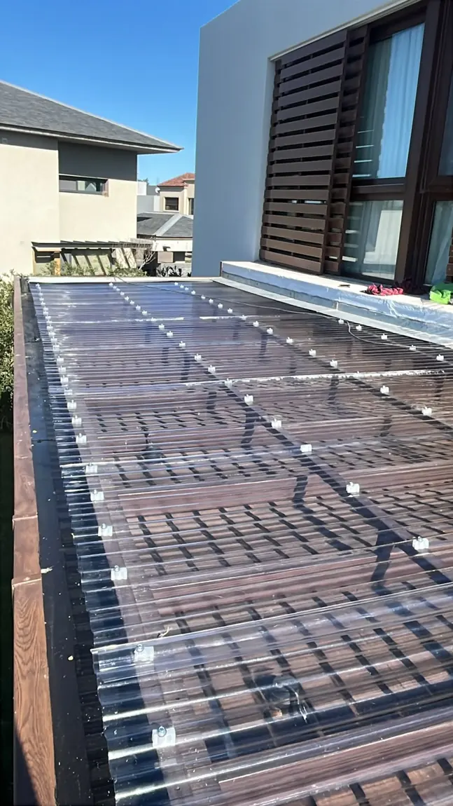

Zinguería
Trabajos en cubiertas y sus terminaciones.
Consultar por zinguería
ROSARIO, SANTA FE
Trabajos de cubierta, albañilería, pintura, plomería y electricidad en toda la ciudad de Rosario.
SERVICIOS
Elegí el oficio que necesitás. Si tu proyecto combina varios trabajos, contanos qué hay que resolver.
Trabajos en cubiertas y sus terminaciones.
Consultar por zingueríaConsultas por obra, arreglos y terminaciones.
Consultar por albañileríaContanos qué ambientes o superficies querés pintar.
Consultar por pinturaContanos qué necesitás instalar, revisar o reparar.
Consultar por plomeríaConsultas por trabajos eléctricos en el hogar.
Consultar por electricidadTRABAJOS
Fotos de colocación, uniones y terminaciones en cubiertas de chapa y paneles translúcidos.






Un recorrido por las fijaciones y el borde de una cubierta translúcida.
ZONA DE TRABAJO
Para empezar, mandanos el barrio y una descripción breve del trabajo. Si ya tenés fotos, adjuntalas en el chat.
Contanos qué querés construir, cambiar o reparar.
Indicá en qué barrio de Rosario es el trabajo.
Si tenés alguna, mandala junto con tu consulta.
Escribinos para conversar sobre el trabajo y coordinar los próximos pasos.